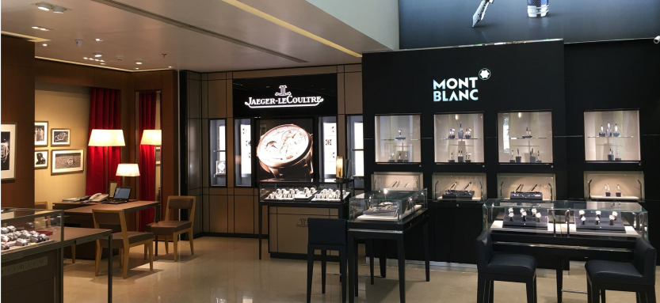
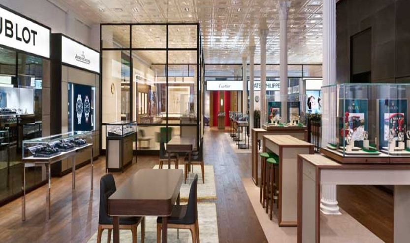
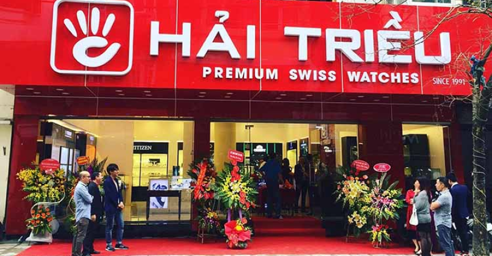

TOP 5 CỬA HÀNG ĐỒNG HỒ ĐƯỢC BIẾT ĐẾN NHIỀU NHẤT Ở VIỆT NAM

Nếu gõ cụm từ “cửa hàng đồng hồ” trên Google tìm kiếm, bạn sẽ nhận được ngay 215.000.000 kết quả trong 0,60 giây. Có đến hàng chục, thậm chí hàng trăm cửa hàng hiện ra khiến bạn hoang mang không biết nên chọn nơi nào tốt nhất. Vậy đâu là địa chỉ đáng tin cậy để gửi gắm niềm tin? Hãy cùng gọi tên 5 cửa hàng đồng hồ được biết đến nhiều nhất tại Việt Nam trước khi đưa ra quyết định mua hàng ở đâu nhé!
1. TIME
Time được biết đến là một trong số ít đại lý bán đồng hồ chính hãng uy tín tại Việt Nam được khách hàng tin tưởng. Với phương châm “Chữ TÂM hàng đầu”, TIME luôn muốn mang lại cho người tiêu dùng “Đồng hồ thật - Giá trị thật” để mỗi khách hàng đến đây đều hài lòng với sản phẩm đã chọn.

Tại TIME, bạn có nhiều lựa chọn cả về mẫu mã lẫn mức giá phù hợp với nhu cầu của mình. Hiện nay, đơn vị đang phân phối các thương hiệu nổi tiếng và phổ biến như: Ogival, Seiko, Citizen, Orient, OP, Festina, Bulova, Elixa… Một số thương hiệu Thụy Sĩ thuộc phân khúc cao hơn, đó là: Tissot, Frederique Constant, Calvin Klein, Emile Chouriet, Victorinox.
Xwatch còn sở hữu đội ngũ kỹ thuật giàu kinh nghiệm và các chuyên gia thẩm định đồng hồ hàng đầu. Vì vậy, không ai phải lo lắng gì khi bạn đồng hành gặp vấn đề cần được kiểm tra và sửa chữa.
2. DUY ANH
Những ai từng tìm hiểu về đồng hồ Duy Anh sẽ biết, đơn vị có mặt khá sớm trên thị trường và đã trở thành cái tên quen thuộc mang đến cho khách hàng những cỗ máy hiện đại, cá tính.
Hiện nay, đồng hồ Duy Anh có mặt trong các trung tâm thương mại lớn như: Vincom, Lotte… và các cửa hàng trên những phố lớn. Đơn vị này sở hữu đa dạng thương hiệu đồng hồ và có đầy đủ các mẫu mã, chất liệu để khách hàng lựa chọn từ đồng hồ thời trang đến các hãng Thụy Sĩ cao cấp như Longines, Tissot, CK…
3. HẢI TRIỀU
Hải Triều được biết đến là đơn vị phân phối đa dạng thương hiệu thuộc nhiều phân khúc. Một số hãng bạn có thể lựa chọn khi đến với Hải Triều đó là: DW, Candino, Fossil, Doxa, Movado, Rotary…
Đơn vị này sở hữu đội ngũ tư vấn viên hùng hậu và các cửa hàng sang trọng, hiện đại. Khách hàng đến đây đều được phục vụ tận tình, chu đáo như các địa chỉ bán đồng hồ chính hãng uy tín vừa được kể trên.
Xuất phát từ một cửa tiệm nhỏ trên đường Âu Cơ, Hải Triều đã nhanh chóng phát triển tại Tp. HCM và được đông đảo người Sài Gòn đón nhận. Đặc biệt là Showroom Hai Trieu Premium Swiss Watch là nơi chuyên phân phối đồng hồ Thụy Sĩ cao cấp, dành cho những ai là tín đồ của những cỗ máy thời gian đến từ Thụy Sĩ.

4. GALLE WATCH
Sở hữu chuỗi cửa hàng sang trọng, Galle Watch cũng là một nơi khách hàng có thể tới và trải nghiệm mua hàng. Nếu trước đây, mọi người biết tới Galle với sắc đỏ nổi bật thì giờ đây màu tím ấn tượng lại đại diện cho đơn vị này.
Hiện nay Galle Watch đang phân phối các hãng đồng hồ khá phổ biến trên thị trường Việt Nam như: Mido, Zenith, Rado, Candino, Century, Alpina…
Các hãng đồng hồ được Galle phân phối đều trải dài từ phân khúc giá rẻ đến tầm cao, phù hợp với mọi đối tượng khách hàng.
5. X - WATCH
Xwatch được biết đến là một trong số ít đại lý bán đồng hồ chính hãng uy tín tại Việt Nam được khách hàng tin tưởng. Với phương châm “Chữ TÂM hàng đầu”, Xwatch luôn muốn mang lại cho người tiêu dùng “Đồng hồ thật - Giá trị thật” để mỗi khách hàng đến đây đều hài lòng với sản phẩm đã chọn.
Tại Xwatch, bạn có nhiều lựa chọn cả về mẫu mã lẫn mức giá phù hợp với nhu cầu của mình. Hiện nay, đơn vị đang phân phối các thương hiệu nổi tiếng và phổ biến như: Ogival, Seiko, Citizen, Orient, OP, Festina, Bulova, Elixa… Một số thương hiệu Thụy Sĩ thuộc phân khúc cao hơn, đó là: Tissot, Frederique Constant, Calvin Klein, Emile Chouriet, Victorinox.
Đó là các cửa hàng phân phối đồng hồ tại Việt Nam mà hầu hết mọi khách hàng đều biết đến.
Giờ đây, chắc hẳn bạn đã lựa chọn cho riêng mình một địa chỉ mà bạn thấy có sản phẩm phù hợp cùng chính sách bán hàng, chế độ hậu mãi tốt nhất.
Nếu còn điều gì thắc mắc về các đơn vị bán đồng hồ chính hãng, hãy gọi tới Hotline: 0912345678
TÌM KIẾM BÀI VIẾT
BÀI VIẾT MỚI CẬP NHẬT
- Hiểu rõ đồng hồ cơ chống nước như thế nào
- Cách phân biệt đồng hồ nam chính hãng và đồng hồ fake cực chuẩn
- 4 phong cách đồng hồ đàn ông ai cũng cần có
- Xu hướng đồng hồ nữ đẹp chính hãng sẽ lên ngôi năm 2019
- Top 3 đồng hồ nữ đeo tay CITIZEN đáng mua nhất